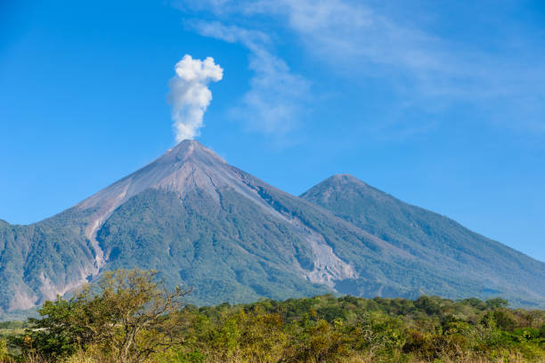

Descripción
El Volcán de Pacaya es uno de los volcanes más activos de Guatemala, ubicado en el departamento de Escuintla. Con una altura de 2,552 metros sobre el nivel del mar, es un destino popular para los amantes del senderismo y la aventura.
El volcán ofrece impresionantes vistas panorámicas y la oportunidad de observar flujos de lava y fumarolas. Los visitantes pueden realizar caminatas guiadas hasta la cima, donde se pueden apreciar paisajes únicos y la belleza natural de la región.
El Volcán de Pacaya es un destino popular para los amantes de la naturaleza y la aventura, y ofrece una experiencia única en la costa guatemalteca.
Ubicación
El Volcán de Pacaya se encuentra en el departamento de Escuintla, a unos 30 kilómetros al sur de la Ciudad de Guatemala.
Actividades Recomendadas
- Senderismo hasta la cima del volcán
- Fotografía de paisajes y flora local
- Visitas guiadas para aprender sobre la geología del volcán
- Observación de flujos de lava y fumarolas
- Disfrutar de la vista panorámica desde la cima